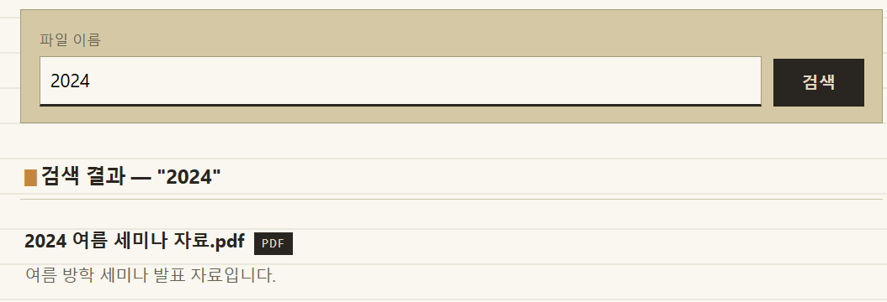
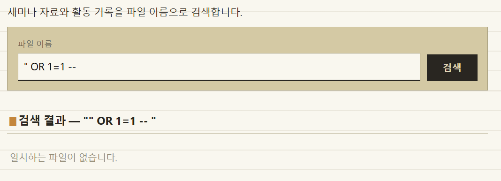
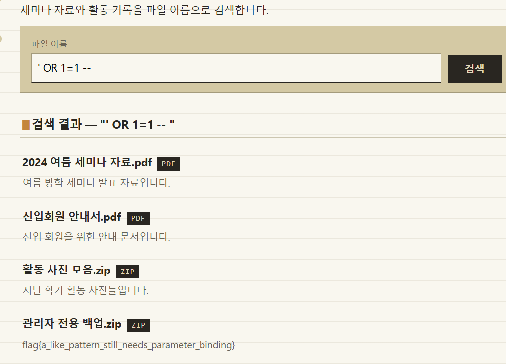

문제설명 :
자료실에서 파일 이름의 일부만 입력해도 관련 파일 목록을 찾아주는 검색기능이다.
목표:
검색 조건을 무력화해 감춰진 파일까지 전부 얻어라

파일이름을 검색하면 큰따옴표까지 보인다.
그래서 큰 따옴표로 감싸서 공격을 보내면

이런 결과가 뜬다..
도대체 왜 그런걸까?
검색결과에 따옴표가 포함된거 보면 뭔가 관련이 있는것 같은데..
SQL에서 따옴표가 어떤 역할을 하는지 알아보았다.
| 기호 | 주된역할 | 예시 |
| 작은따옴표 ' ' | 문자열 값을 감싼다 | 'admin' |
| 큰따옴표 " " | 테이블명·열 이름 같은 식별자를 감싼다 | "username" |
SELECT username FROM users;
SELECT "username" FROM users;
위 예시에서 실제 열 이름이 username이라면, 보통 두 문장은 같은 값을 반환한다.
- username: 따옴표가 없는 식별자다. DBMS가 열 이름으로 해석한다.
- "username": 큰따옴표로 감싼 식별자다. 이름을 적힌 그대로 지정한다.
만약 이 서버가 내가 적은 파일이름을 그대로 해서 해당 문자열이 행에 있는지를 찾는식으로 만들어져 있다면 아마 작은 따옴표를 사용했을것이다.

예상대로 작은 따옴표로 바꾸어주었더니 문제가 풀렸다.
--는 뒤의 구문들을 주석처리하겠다는 것이다.